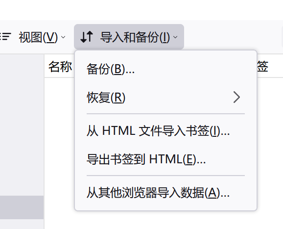

使用 org-mode 管理浏览器书签 
Table of Contents
出于整理浏览器收藏夹的需要，我稍微折腾了一下，最后还是选择了使用 org-mode 来管理书签。本文记录了我的一点折腾过程和最后使用 org-mode 管理记录的方法。
除最后一节需要对 org-mode 有较为全面的了解之外，其他部分不需要任何的 emacs 知识，希望我翻到的一些浏览器插件和命令行工具对你有所帮助。已经有不少人在 org-mode 上折腾过了，所以遇到问题时也不用太担心，善用搜索引擎。
本文包括的内容：
- 折腾动机
- 一些书签管理增强插件
- 浏览器书签管理的一些问题
- 非浏览器书签管理
- 使用 org-mode 管理书签
本文使用的环境如下：
- emacs 28.1 on Windows 10
- Python 3.10 on Windows
1. 写在前面
至少在三年前我没有想过这个问题，只有一台电脑是不需要考虑同步问题的，手机一般也只用来查看一下网页，没有保留链接的必要。但是两年前情况变了，我因为玩系统的需要组了一台垃圾电脑，这样一来我就有两份收藏夹需要管理。之后除 edge 外我还使用过 firefox，chrome 等浏览器，我面对的就是多台电脑加多个浏览器的情况。这样看上去挺麻烦的，不过我也将就用到现在，这也许说明收藏夹不是什么太重要的东西（笑），毕竟搜索引擎足够强力。
这一时期我对收藏的管理主要在归档和同步两方面，归档主要是通过将书签存入文本文件并放入移动硬盘或网盘来完成，而同步是通过浏览器提供的导入/导出功能，以文件传输的形式完成。不论是 firefox 还是 edge 都提供了 import/export 功能以导入/导出 HTML 形式的收藏夹，非常方便，但我归档的时候似乎没想到直接使用导出文件，还非要手动一条条输链接到 txt 里…
| edge | firefox |
|  |
当然不用我说你也知道，一般的浏览器都提供了同步功能。通过在不同机器上登入浏览器账号就可以同步收藏夹。但是我发现 edge 的登入似乎有些困难，时而登的上时而登不上，而 firefox 我也一直懒得注册，也就没怎么用过。
除了同步和归档，书签的数量也是一个问题，书签越来越多，光靠手翻来查找效率也不太行。这么一大堆链接肯定有不少已经用不了了。使用浏览器的一些插件可以解决或缓解这些问题，这就是下一节的主题。
2. 使用浏览器插件管理书签
我们可以使用一些插件来增强浏览器的书签管理功能。我平时用 Chrome 用的少，这里就用 firefox 上的插件举例了。我基本上没用过什么浏览器插件，所以这里只是尝鲜，没有长期用户体验陈述。
在开始之前，我们先列出浏览器收藏管理的一些基础功能，这样方便看看增强性插件强在哪里：
- 添加/删除/修改书签，以及批量操作功能
- 查找书签，可根据网址，名称查找
- 文件夹式分类功能
- 导入/导出功能，方便归档和迁移
- 同步（需要注册账号和网络）
2.1. 清除冗余收藏 Boorkmark Dupes
在 firefox 中已收藏网页的收藏按钮会被标蓝（默认主题下），这个时候点击该按钮只能对书签内容进行编辑而无法再次保存，这样就避免了重复的书签。不过我们可以通过在管理书签（Ctrl+Shift+O）窗口中复制书签，这是一种创建重复书签的方法。日常使用中可能时不时会出现重复的书签，这就造成了冗余。
这个插件的作用就是检测并删除冗余书签。它的界面如下图所示：
 |
它提供的功能还算丰富，可选择除最新/最旧的重复书签并一件删除。它还提供了使用正则匹配的高级模式，不过一般用不着。
2.2. 清除 404 书签 404 Bookmarks
使用这个插件可以发现并移除已经无法访问的书签，就像这样：
 |
具体的原理我不太清楚，不知道能不能在 emacs 中实现…
2.3. 搜索功能强化 Bookmark search plus 2
firefox 默认提供的搜索功能可以对 title 和 url 进行搜索，一般来说也是够用的，这个插件对搜索进行了强化，可以使用正则进行搜索，可以搜索特定收藏文件夹。下右图是使用 ^G 正则得到的结果。
2.4. 交互式书签管理 Keep or Delete Bookmarks
打开该插件后，它会显示某个书签以及一些操作，你可以选择删除，保留和跳过。这样就不需要你一个个翻书签了，它会自动遍历。如果选择保留，书签就不会再被它拿出来，选择删除即删除书签，选择跳过，下次使用该插件时书签还会被显示。
这和 emacs 里的 query-replace 有点像，也许可以考虑使用相似方法在 emacs 中实现。
2.5. 安全 Private Bookmarks
Private Bookmarks 可以创建一个有密码的书签文件夹，锁定后该文件夹不可见。需要在隐私访问（private browsing）标签页中才能打开它。首次使用时需要设置密码。
2.6. 更好的界面 BookmarksHome
就像我从来都是把 org 文件转成带 css 的 HTML 来读一样，这个插件可以将收藏夹中的链接以更易读的 HTML 页面展示出来，出于隐私考虑，这里就截一小个文件夹：
3. 浏览器书签管理的一些问题
我列出来的问题可能部分被上面的插件解决掉了，不过我还是列一下吧，这里针对的是浏览器最基础的书签功能。这是“我”认为存在的问题。
老实说我有点吹毛求疵了，毕竟书签一般只是放在浏览器里面的快捷方式而已。
3.1. 分类与 tag
就像文件系统一样，收藏夹不仅允许创建收藏书签，还允许创建收藏文件夹，可在文件夹内存放收藏书签。通过给文件夹命名，我们就可以对收藏书签做一个简单的分类，比如编程，视频，博客，百科等等。如果还要继续细分还可以创建三级甚至二级收藏夹。不过一般最多两级就够了。
这样的层级管理有个问题，那就是书签可能同时具有多种属性，假设我现在发现了一篇讲解在 emacs 中使用数据库的文章，如果我有“数据库”文件夹的话我应该放入其中，但是“emacs”文件夹也应该放一个（一般来说这类文章 emacs 内容更多一些，但是与数据库也是相关的）。这会导致存书签的时候还要纠结一下，几年下来我发现我的“other”分类里面存放了最多的书签，而其他文件夹里面更新间隔很长。
凭现在的我来看，使用文件夹来分类是一种非常朴素的思路，相当于给每个书签打上了一个 tag，这样就方便归类查找。更好的方式也许是在一个大的文件夹内（也许是文件内）存储书签，在其他地方存放 tag 信息，单个书签可拥有一个或多个 tag，这样方便对书签进行基于 tag 的查找。
当然这两种方式并不冲突，层级分类也可以使用 tag。
在 Edge 中我似乎没有看到 tag 功能，不过 firefox 中有个叫做标签的功能，可以根据标签来寻找书签。
 |
3.2. 搜索
就像我在上面提到的，一般浏览器会提供对标签名字和 url 的搜索功能，这个功能一般来说也是够用的（谁还每次搜索的时候想想怎么写正则）。但假设我想要搜索一段时间内保存的书签，或是根据其他的一些信息（比如访问频次）来搜索的话，基础的功能是不够用的，浏览器里面也不一定存储了这些时间和访问次数的信息。
不过话又说回来，除非说闲到蛋疼，我也懒得加上根据时间检索的功能。
3.3. 同步
这里与其说是叙述不足之处，不如说是我在吐槽些无关痛痒的东西罢了（笑）。
貌似十几年前 firefox 就开始提供同步功能了，大致原理是将书签上传至 firefox 服务器上并加密，除用户外的任何人都无法访问。Edge 上也可以同步，不过需要 Microsoft 账号，然而在我的电脑上登入 Microsoft 一直是个问题。
浏览器提供的同步功能我基本上没有用过，所以也没法做什么评价。在多个浏览器间的收藏夹同步插件也有，比如 BookmarkHub - 书签同步（使用 gist 来做同步，作者也是心大，不过私有 gist 也许是足够安全的）。不管是浏览器同步还是插件同步，书签总是要上传到第三方的，也许会存在一定的安全问题。
不过这个安全问题就见仁见智了，这主要取决于用户是否信任服务提供者。我觉得一切上网的东西都是不安全的（笑），不过我对云盘之类的比较满意。
4. 非浏览器收藏管理
书签一般都是通过浏览器管理的，但是肯定会有人因为各种原因对浏览器书签管理不满（比如现在的我），进而自己造一些小工具。我比较关注一些 CLI 小玩意，所以这里就不介绍 GUI 式的管理软件了，我想在 emacs 里弄个简单的界面。
4.1. buku
buku is a powerful bookmark manager and a personal textual min-web. —— readme
buku 支持以下特性：
- 自动获取书签的标题，tag 和描述
- 可直接从 Firefox，Chrome，Chromium 和 Edge 中导入书签
- 在浏览器中打开搜索到的书签
- 从 Wayback Machine 浏览缓存页面
- 编辑器集成
- 轻量级、简单的界面、可定制颜色
- 强大的搜索选项（正则，子串搜索）
- 连续搜索（估计是使用上一次搜索结果）
- 便携，可合并的数据库，便于系统之间同步
- 使用 HTML，XBEL，Markdown 或 Org 格式进行书签的导入/导出
- 多线程 DB，支持手动加密
- ……
这里面有很多好用的特性值得我借鉴（如果我要自己写一个类似的话），比如使用了 sqlite3（话说 emacs 29 里面已经集成了）。但是很可惜我使用了 windows 系统，通过 pip install buku 后得到了这样的结果…
在我通过一遍遍运行来找到缺失的包并成功添加第一条书签后，我发现中文有部分乱码……也许是 Pypi 上的包有些小 bug，或是 windows 上的编码问题。如果能够开箱即用（指一条 pip 搞定）的话我还挺想用一下的，毕竟 emacs 界面已经有人写好了：ebuku
4.2. nb
与 buku 不同，这是一个用于笔记管理的软件，如果把书签当作笔记的话就可以用了（笑）。它使用 git 来进行同步和版本管理，支持多种编辑器。
可惜我实在太懒了，看到文档里要求 WSL 环境我就不太想弄了（也许 MSYS 可以，谁知道呢）。
4.3. 其他
除了 buku 和 nb 外，我找到的其他大多都是些小玩具，我感觉也没有必要列这么多了，下面简单拉个列表结束掉这一节。
用 go 写的简单管理软件
相比 buku 就没有那么多功能了，算是个比较小巧的书签管理工具。具体内容可以去 github 上看看。
这大概算是个玩具项目，通过命令 boom 可以创建列表并保存，之后可以通过命令方便地将书签放入剪贴板中。不过它并不是专门为书签管理设计的，it's just a toy。
5. 使用 org-mode 管理书签
说了这么多总算是来到了本文的核心部分。这一节中我会就几个方面来展开介绍，并在最后给出可用的代码。阅读这一节需要你对 org-mode 有较为全面的了解（至少要用过基本功能），没用过的话可以阅读 The Org Manual（或者是 M-x info 再找 Org，为了写这一部分我花了两天时间把整个文档读了一遍）。当然我更建议读 Org Mode Compact Guide，这个更加简单。
5.1. 为什么选择 org-mode
这一部分可看作我给 org-mode 和 emacs 做的广告。（笑）
emacs 是一款活化石级别的编辑器，适配的平台极其广泛，且至今仍在活跃开发中，目前最新的版本（29）已经加入了 sqlite 支持。换句话说，使用 emacs 不用担心出现一个平台可用而另一平台不可用的问题。自 1976 年开始，有无数的人为 emacs 写过代码，这也就意味着 emacs 具有非常丰富的生态，在遇到问题时可以在他人的代码中寻求解决方案。
org-mode 可以用来记笔记，做项目规划，记录时间日期，进行文学编程等。换句话的话它就是个通用的文本管理系统，提供了丰富的功能。考虑到文本文件是一种“放之四海而皆准”的文件格式（换句话说就是只有基本文本），我准备使用文本来保存书签。利用 org-mode 的功能可以方便地实现增删改查等功能，这些会在后面的内容中讲到。
不过话又说回来，不管是 emacs 还是 org-mode 都有一定的学习成本，我属于是沉没成本太高了，如果没有了解到 emacs 的话我也许就直接使用浏览器自带书签管理功能了。
5.2. 计划实现的功能
参考浏览器书签，buku 等等管理软件，这里列出我想要实现的功能，考虑各方面因素，我应该不会全部实现。
5.2.1. DONE 基本的增删改查 [3/3]
- DONE 增加
最直接的添加方法是从浏览器中复制 url 再放到 org 文件中。但这样显然称不上快捷，毕竟浏览器只要点一下星标就可以设置书签的标题文本和存放位置，这就像个模板一样，只需要往里面填需要的信息就行了。
这个功能可以使用 org-capture 来实现，通过编写 capture 模板来添加 url 和附加信息，这样就不用手动敲入
NAMEDESCRIPTION或是URL等固定名字了。这里有篇文章可作参考：bookmarking with org-mode另外，也许可以考虑使用 org-mode 的 protocol 功能和一些浏览器插件来实现一键保存，就像这个帖子提到的那样：从浏览器一键保存书签到 Org Mode
- DONE 删除和修改
修改自然不用说，emacs 的本工作就是编辑文本，删除的话可以使用
C-c C-x C-w（org-cut-special）来删除一整个标题的内容。 - DONE 查找
一般浏览器支持 name 和 url 查找，这些功能 emacs 自带的搜索自然不在话下，在 emacs 中也可以很方便地使用正则进行查找。
除了文本查找外自然还需要基于标签（tag）的查找，这个可以考虑使用 org-agenda 的功能来实现。我也许会添加基于时间的查找功能，这样就可以根据时间段进行查找（算了算了）。
org-agenda 应该是基于文本的查找，既然 emacs29 都内置数据库了，有时间的话我会考虑用数据库来实现更加快速的查找。不过要体现出数据库的优势也许得上万甚至上十万书签了。等到 29 出正式版再说吧。
5.2.2. DONE 分类与 tag
浏览器提供了文件夹式的分类功能，将一个个书签放入书签文件夹就相当于给书签贴上了标签，方便根据分类进行查找。在 org-mode 中要实现分层分类功能，可以考虑使用属性（PROPERTIES）来表明该 HEADLINE 是书签实体还是分类。具体来说的话就像这样：
* Search Engine :PROPERTY: :Is-Folder: t :END: ** Baidu :PROPERTIES: :Is-Folder : nil :END: www.baidu.com ** google :PROPERTIES: :Is-Folder : nil :END: www.google.com ......
不过我不打算使用这种分层分类的方式，如上文所见，我不是太喜欢它，分类层级太多的话查找起来并不方便。我准备直接使用类似表格的格式，也就是只使用同一级标题表示书签，这样实现起来也更加方便。
存储格式只有一层的话如何分类呢？使用 org-mode 的 tag 功能可以实现。而且 org-mode 的 tag 还支持嵌套，需要的话可以实现基于 tag 的分层。
5.2.3. DONE 归档与同步
归档非常简单，直接使用 org-mode 的 archive 功能即可，将当前文件内的全部数据归入另一文件中。org-mode 还支持所谓的内部归档，加上 :ARCHIVE: 的 tag 即可。使用 org-agenda 还可以对归档文件进行方便地搜索。
至于同步问题，无论是自建服务器提供同步功能，还是使用同步盘服务都可以（我已经把浏览器同步排除了）。我使用了两年的 Onedrive，速度还行，同步效果也不错，就是有点小贵。最近发现金山云盘有 1 个 G 的免费空间，就算开会员也比 Ondrive 要便宜不少，暂时先用着。
这里还是要说一句，不管是自建还是使用云盘同步，数据都不可能是绝对安全的，一定要做好本地备份。
5.2.4. TODO 与浏览器的互操作
在 org-mode 中，通过点击链接或 C-c C-o 即可在默认浏览器中打开链接，但这还是比不上从浏览器中直接点方便。要是能够同步 org 文件和书签栏的话效果应该挺不错的，这就需要我去学习怎么写插件了。使用数据库来与浏览器交互应该会更好，所以等 29 吧（笑）。
除了上面的愿景，还可以考虑实现从 Edge 或 firefox 的书签导出文件中导入书签，以及从 org 中导出 Edge 或 firefox 可识别的书签文件。这部分应该可以参考 buku 的代码。
5.2.5. TODO 其他
[ ]如果使用 sqlite 就可对数据进行加密（免费版好像不行…，需要使用 SEE 加密工具），这样应该会更加安全一点，也许可以做一个写入和读出数据库的功能，实现 org 文本和数据库的无缝转换[ ]如果功能足够丰富的话，可以考虑写个 minor-mode[X]添加下载网页的功能，把值得收藏的网页下载并存储下来
暂时就这么多吧。
5.2.6. 数据格式设计
在这一节的最后我们说下书签模板的设计。
如前所述，我不会采用嵌套标题来表示分层分类格式，那样不便于一些遍历操作。我会使用简单的同一级标题来保存。标题中的内容就是带描述的链接，这样鼠标一点就可以打开链接。tag 就是它的分类。一个标题可有多个 tag。
那么一个项需要具有哪些元素呢？
url和description可使用 org 的默认格式表示：[[link][description]]。当在标题上按下C-c C-o或单击鼠标时就可在浏览器打开该网页tagtag 直接放在标题后面，使用:分隔，举例来说是这样：:a:b:c:PROPERTIES里面存放链接添加时间等日常无需了解的数据text放在标题的正文部分，对书签的内容做进一步说明
把整个网站下载下来使用 orig-attach 保存也算是一种备份手段，我会在后文说明实现方法以及演示使用方法。它为每个书签分配一个唯一的 ID 值和唯一的文件夹位置，需要保存的文件可放在文件夹内。（功能描述在这里）
以下为一个示例：
* [[https://baidu.com][百度一下，你就知道]] :search:ATTACH: :PROPERTIES: :ID: 114514-191981 :YYOB-CREATE-TIME: [2022-07-27 Wed 19:36] :YYOB-ID: 1 :YYOB-MD5: c4ca4238a0b923820dcc509a6f75849b :END: 百度，一个搜索引擎 ......
在上面的例子中， :search: 就是 tag， :PROPERTIES: 中的 :ID: 就是 attach 的 ID 值，用来索引保存的文件位置。 :YYOB-CREATE-TIME: 就是创建时间， :END: 后面的文本就是详细描述部分，这部分的内容就随意了。
在正式开始编写之前，我先介绍 org 的几个 handy function，它们可以用来进行一些常用操作。
how to recursively search org-mode headers non-interactively?
org-map-entries遍历文件中的所有标题org-heading-components获取标题的一些状态，具体内容可C-h forg-entry-getorg-entry-put获取和设置属性值org-map-tree遍历所有嵌套的标题
5.3. 实现与演示
接下来就开始介绍我的具体实现思路和部分代码，我将它实现为一个 elisp 包，名字叫做 yyorg-bookmark ，链接放在本节的最后。首先从设计思路上来说吧。
多亏了 emacs 28 的新特性 shorthands，写代码的时候可以少写很多包前缀。下面的代码的包前缀都使用 t- 而不是 yyorg-bookmark- ，emacs 在读取时会自动转换。
5.3.1. 设计思路
首先我们需要认识到，每个书签文件其实就是一个数据库，某种意义上来说我写的这个包就是个非常简陋的 DBMS。除数据外 DB 还要保存一些管理信息，如果我把这些变量放在包里面就会增加发生冲突的可能性（比如名字冲突等）。所以我将它们放在了书签文件中，将一些通用管理函数放在了 yyorg-bookmark 里。
多亏了 org-mode 提供的文学编程功能，我可以在 org 文件中创建 elisp 代码块，并在文件载入 emacs 时运行以进行一些初始化操作。具体来说就像这样：
#+NAME: startup #+BEGIN_SRC emacs-lisp (your-code-here) #+END_SRC ... # Local Variables: # org-confirm-babel-evaluate: nil # eval: (progn (org-babel-goto-named-src-block "startup") (org-babel-execute-src-block) (outline-hide-sublevels 1)) # End:
通过将变量使用 setq-local 设置就可设置 buffer 局部变量，这样就不容易引起 buffer 间冲突。同时代码块里也可以包含一些专用于 buffer 的管理函数，它们可以是 yyorg-bookmark 的函数的包装，或是自己定义的管理函数。
我将上面这样的模块放入了一个模板文件中，并添加了一个叫做 yyorg-bookmark-enchant 的命令，使用该命令即可将模板文件附加到当前 buffer 末尾，这样完成了一个 yyorg 书签数据库的建立，完成了对 buffer 的“附魔”（笑）。
分离带来好处的同时也带来一个问题，我要怎样才能访问 buffer 中的局部数据呢？可以通过将当前 buffer 切换至书签文件并使用 symbol-value 来获取。那要如何获取书签文件的 buffer 呢？好在 org-mode 提供了一个模板名与文件对应的关联表 org-capture-templates ，在进行内容捕获时，org-mode 根据它来选择对应的模板，并写入对应的文件。
在书签文件载入时，书签文件需要将自己的模板添加到这个表中，这样就可以令 org-mode 在捕获内容时根据选择将内容输入到对应书签文件中。我们可以查询模板名来获取对应书签文件名。我编写了一些辅助函数，下面是一个比较好用的内部函数：
(yyorg-bookmark--template-filename key)，根据org-capture-templates和模板名获取捕获的目标文件
通过下面的代码即可获取和修改书签文件中的局部变量：
(defun t-get-local-value (key symbol) "get buffer-local value in target file" (let* ((filename (t--template-filename key)) (buf (get-file-buffer filename))) (save-current-buffer (set-buffer buf) (symbol-value symbol)))) (defun t-set-local-value (key symbol value) "set buffer-local value in target file" (let* ((filename (t--template-filename key)) (buf (get-file-buffer filename))) (save-current-buffer (set-buffer buf) (set symbol value))))
当然这也带来一个问题，代码变长了不少（毕竟是打洞做法……）
5.3.2. 一些辅助函数
在完成了最基本的分隔工作后就可以写一些包装函数了，这一部分是对 org-mode 部分函数的封装，让这些函数好用一些。
首先是对 org-capture-templates 添加/删除的处理。它是我这个包里最重要的全局资源，用来关联模板和书签文件。为了避免出现一些低级错误，比如类型错误，模板错误等，需要对添加过程做一些检查。同时考虑到它的全局性，在添加同名模板时也要检查是否冲突，由用户来决定是否覆盖已存在的同名模板。
我编写了 yyorg-bookmark-add-template 函数来添加模板，一个简单的例子如下，这是附魔文件里的例子模板：
(yyorg-bookmark-add-template :key "l" :desc "Add browser bookmark" :type 'entry :target `(file+headline ,(buffer-file-name) "Bookmarks") :temp "* %c %^g\n:PROPERTIES:\n:YYOB-CREATE-TIME: %T\n:YYOB-ID: %(yyorg-bookmark-control-key-counter \"l\")\n:END:" :props '(:prepend t)))
除了添加外也要考虑删除，我还编写了 yyorg-bookmark-remove-template 用于从 minibuffer 中选择并删除模板。
(defun t-remove-template (key) "remove a template from `org-capture-templates' use minibuffer to select a key" (interactive (list (completing-read "key: " (t--template-keys) nil t))) (setq org-capture-templates (cl-delete-if (lambda (x) (string= key (car x))) org-capture-templates)))
再然后就是对属性值的操作，org-mode 提供了一些函数：
org-entry-get，获取某一点所在 HEADLINE 的属性值org-entry-put，设置某一点所在 HEADLINE 的属性值org-find-entry，寻找第一个匹配的属性值，返回位置
使用上面的三个函数，我编写了两个辅助函数，它们接受一个可选参数来判断自己是否在 HEADLINE 上，若是则直接使用当前位置，否则使用 org-find-entry 查找属性位置：
(defun t--get-property (pname &optional on-headline) "return string if found, or nil if not" (let ((place (if on-headline (point) (org-find-property pname)))) (if place (org-entry-get place pname) nil))) (defun t--set-property (pname strval &optional on-headline) "set property `pname' if found and return t, or nil if not if on-headline is set and point is on headline this function will always success" (let ((place (if on-headline (point) (org-find-property pname)))) (if place (prog1 t (org-entry-put place pname strval)) nil)))
另外，由于 org-mode 中属性值都是以字符串保存的，如果要进行数学运算并不方便。我添加了一些计数器操作，可以较方便的对某个属性值进行自增和自减，最终的可用函数如下：
(defun t-control-counter (pname op &optional on-headline) "control counter's value '+ is add1, '- is sub1, 'r is reset to 0, 'z is unchange return the origin value" (cl-case op ((+) (t-increase-counter pname on-headline)) ((-) (t-decrease-counter pname on-headline)) ((r) (t-reset-counter pname on-headline)) ((z) (t--get-property pname on-headline)) (t (error "unrecognized op %s" op))))
最后是对标题属性值的枚举，可以获取所有 HEADLINE 的属性值，这个函数可配合 emacs 的 narrow 功能实现区域枚举。
(defun t-get-all-entries-properties (pnames) "get all entries specific property return form is ( ((p1 . v1) (p2 . v2) ...) ... ) in other words, return value is a nested alist you can use it with narrow" (let ((pro-list)) (org-map-tree (lambda () (let ((a (org-entry-properties)) (b)) (mapc (lambda (x) (let ((c (assoc x a))) (when c (push c b)))) pnames) (when b (push b pro-list))))) (reverse pro-list)))
上面这些函数基本上就是 yyorg-bookmark.el 文件中实现的功能了，接下来我们来到附魔模板的代码编写，来实现一些更加贴近用户的操作。
5.3.3. 获取书签
首先从获取书签的功能开始。最直接也最费劲的方法是手动添加，这里就不提了，我们来写个 capture template 吧，文档在这：Capture templates。拿我在上面写的模板做使用例，考虑到现在还没有使用 yyorg-bookmark ，这里不使用 yyorg-bookmark-add-template 函数：
(add-to-list 'org-capture-templates
`("l" "Add browser bookmark" entry
(file+headline ,(buffer-file-name) "Bookmarks")
"* %c\n:PROPERTIES:\n:TIME: %T\n:END:"
:prepend t))
上面这段代码的作用是将模板 "l" 添加到 org-capture-templates 中。这里目标选择当前 buffer 对应文件，HEADLINE 选择 Bookmark，属性选择 :prepent t ，这表示将新的项添加到最前。完整版的例子在代码仓库的附魔模板文件中。
我们可以体验一下这段代码的效果，按下 M-x org-capture ，然后选中 l ，你可以看到剪切板中的内容被放到了添加项的标题中， TIME 属性值成为了当前时间。接着按下 C-c C-c 完成捕获。动图如下所示：
 |
可见，在我复制 "Hello world" 并调用 org-capture 后，"Hello world" 出现在了标题位置，这是 %c 的作用，其他的特殊符号可参考官方文档。
使用这个简单的模板已经可以实现收集书签了，工作流大概是：在浏览器中复制链接，在 emacs 中完成捕获动作，在浏览器复制标题，在 emacs 中添加标题，完成。但这显然是不够快捷的，这样得往返浏览器两次，最好是点一下就能存上。
这里有篇使用 applescript 拷贝浏览器链接到 org-mode 的文章，这样做就不用跑两趟了。不过他这还是要手动 org-capture ，更要命的是我从来不用苹果的笔记本电脑。
好在有更好的解决方案，它就是 org-protocol 。
5.3.4. 一键获取
就像我在上面说的，存书签最好是点一下就好，而 emacs 正巧也有相应的解决方案。熟悉 emacs 的你应该知道 emacs 有个 emacsclient，如果 emacs 启动了 server，那么可用 emacsclient file 命令在已启动的 emacs 中打开文件，这样就不会有多个 emacs 实例了，再也不用担心 emacs 启动太慢了（笑）。
org-protocol hack 了 emacsclient，除了传递文件名给 emacsclient 外，还可以传字符串过去，org-protocol 会检查字符串中有没有已经注册的协议，如果有的话它会将字符串的内容交给对应程序处理。换句话说，只消使用适当的字符串在 emacs 外面调用 emacsclient，emacs 就能做出相应的动作。
你可以使用以下代码启动 emacs server：
(require 'server) (unless (eq (server-running-p) t) (server-start))
org-protocol 默认支持三种协议，我们要使用的那一种是 capture ，传递给 emacsclient 的字符串是这样的一个格式：
emacsclient "org-protocol://capture?template=X&url=URL&title=TITLE&body=BODY"
调用 emacsclient 后， org-capture 会使用模板 X 来处理捕获内容，并完成捕获。可以看到上面的内容包括三个部分，分别是 url，标题和内容，使用文档中的对应的特殊符号即可在 org-capture 模板中获取这些字符串。通过设置一些选项， org-capture 可以不需要 C-c C-c 确认而直接完成捕获过程，这样就可以一键捕获了。
那么，我们要如何在浏览器中调用 emacsclient 呢？可以参考 Intercept calls from emacsclient to trigger custom actions 。如果你和我一样使用 Windows，那只需运行下面的 reg 脚本即可（或者自己在 regedit 中添加）：
REGEDIT4 ; see https://orgmode.org/worg/org-contrib/org-protocol.html ; and https://github.com/sprig/org-capture-extension [HKEY_CLASSES_ROOT\org-protocol] @="URL:Org Protocol" "URL Protocol"="" [HKEY_CLASSES_ROOT\org-protocol\shell] [HKEY_CLASSES_ROOT\org-protocol\shell\open] [HKEY_CLASSES_ROOT\org-protocol\shell\open\command] ; use you own path to emacsclientw.exe @="\"path\\to\\your\\emacs\\bin\\emacsclientw.exe" \"%1\""
具体原理可以参考 “有个网站想打开此应用”原理是什么？，这里直接摘过来了：
作者：Hawaii
链接：https://www.zhihu.com/question/410173377/answer/1366638756
来源：知乎
著作权归作者所有。商业转载请联系作者获得授权，非商业转载请注明出处。
- 浏览器解析URL，得到协议部分thunder://
- 浏览器尝试在已知的协议列表中匹配thunder协议
- thunder不是已知协议，浏览器转而在注册表中查找thunder协议的注册信息，也即HKEY_CLASSES_ROOT/thunder这个键
- 浏览器使用这个键下的Shell/Open/command子键的值作为运行此协议的程序路径，并将URL的路径部分作为程序的参数
- 浏览器弹出提示框“有个网站想打开此应用”，询问用户是否要执行此协议关联的程序。
在添加相应的注册表项后，当你在浏览器地址栏中输入类似 org-protocol://capture?template=l&url=baidu.com&title=百度一下你就知道&body=hello 的 url 时，浏览器就会提示你是否运行 emacsclient，点击运行即可执行捕获动作。
现在还剩最后一步，那就是一个能够获取网页信息和发送数据的按钮，使用简单的 JS 代码即可获取协议所需的信息并发送：
location.href = 'org-protocol://capture?template=' + key + '&url=' + encodeURIComponent(location.href) + '&title=' + encodeURIComponent(document.title) + '&body=' + encodeURIComponent(window.getSelection()); // use this for bookmark javascript:location.href='org-protocol://capture?template='+'yyobp'+'&url='+encodeURIComponent(location.href)+'&title='+encodeURIComponent(document.title)+'&body='+encodeURIComponent(window.getSelection());
在一些浏览器中你可以将那一长条代码放到书签地址中，然后点击书签即可实现捕获。我在 firefox 和 edge 上进行了尝试，firefox 可行但 edge 不可行。edge 不允许从书签处执行 JS 代码。使用书签不能适用于所有浏览器。下图是 firefox 的编辑书签对话框：
既然书签不行那可以使用浏览器插件，在 firefox 上有个叫做 org-capture 的插件，这里是源代码及文档。按照它的说明配置好 emacs 后，点击浏览器插件的那个马头（还是独角兽？）就可以一键保存了。很可惜这个插件在 edge 上并没有。
最后我想到了使用油猴脚本，油猴在许多浏览器上都可用（我就用 edge 和 firefox），脚本编写也比较容易。通过它实现一键保存对我来说是最可行的方案了。下面给出我的油猴脚本和效果截图：
// ==UserScript== // @name yyob-add-bookmark // @namespace http://tampermonkey.net/ // @version 0.1 // @description use org-protocol and tm-script to add bookmark // @author include-yy // @match *://*/* // @grant unsafeWindow // @grant GM_registerMenuCommand // ==/UserScript== (function() { 'use strict'; // Your code here... // all templates // [key, description, accesskey] // comment or uncomment to add/remove item let all = [ ['yyobp', 'Add Bookmark', 'a'], ['L', 'add bk 2', 'p'] ]; let i = 0; // https://stackoverflow.com/questions/25750183/how-to-create-a-toolbar-button-for-a-chrome-tampermonkey-user-script // how to add MenuCommand for (i = 0; i < all.length; i++) { let name = all[i][0]; let desc = all[i][1]; let hotkey = all[i][2]; GM_registerMenuCommand(desc, function() { main(name); }, hotkey); } // https://github.com/toure00/org-capture-tag-bookmark // how to capture link and description function main (key) { location.href = 'org-protocol://capture?template=' + key + '&url=' + encodeURIComponent(location.href) + '&title=' + encodeURIComponent(document.title) + '&body=' + encodeURIComponent(window.getSelection()); } // my original thought was to use radio/checkbox dialog to add or remove template to use // but I found it easier to just add/remove a list in a list variable :p // if you want to do like this, you can refer to // https://stackoverflow.com/questions/11668111/how-do-i-pop-up-a-custom-form-dialog-in-a-greasemonkey-script // and https://github.com/toure00/org-capture-tag-bookmark // if you want to use jQuery, just paste blow line to the ==userscript== block // @require https://code.jquery.com/jquery-2.1.4.min.js })();
最后让我们来看看捕获展示：
下面是上面演示中使用的捕获模板， template 部分看着非常别扭，下面会解释原因：
(yyorg-bookmark-add-template :key "yyobp" :desc "Add browser bookmark" :type 'entry :target `(file+headline ,(buffer-file-name) "Bookmarks") :temp "* [[%:link][%:description]] %(yyorg-bookmark-add-repeat-tag (md5 \"%:link\") (yyorg-bookmark-get-local-value \"yyobp\" 'yyob-hashtable) 'gethash)\n:PROPERTIES:\n:YYOB-ID: %(if (string= (yyorg-bookmark-add-repeat-tag (md5 \"%:link\") (yyorg-bookmark-get-local-value \"yyobp\" 'yyob-hashtable) 'gethash) \"\") (progn (puthash (md5 \"%:link\") (yyorg-bookmark-control-key-counter \"yyobp\" 'z) (yyorg-bookmark-get-local-value \"yyobp\" 'yyob-hashtable)) (yyorg-bookmark-control-key-counter \"yyobp\")) (gethash (md5 \"%:link\") (yyorg-bookmark-get-local-value \"yyobp\" 'yyob-hashtable)))\n:YYOB-CREATE-TIME: %T\n:YYOB-MD5: %(md5 \"%:link\")\n:END:%(if (string= \"\" \"%i\") \"\" \"\n%i\")" :props '(:prepend t :immediate-finish t :jump-to-captured t)))
这一部分我参考的资料有很多：
5.3.5. 添加和删除
通过上面的一些操作我们实现了从浏览器直接发送书签到 emacs，接下来要考虑的是添加和删除的问题。如果仅仅是文本的添加和删除的话这一节是不必要的，添加可通过手动添加或 org-protocol 获取，而删除可直接调用 org-cut-subtree （ C-c C-x C-w ）来删除整一个书签的内容。
对添加和删除的管理是为了更好的去重 。在我的实现中，可以使用局部快捷键 C-c k 来删除书签，使用 C-c i 来添加书签（信息）。与普通的文本操作不同，这两个操作会修改一些管理信息。
在我的捕获模板中，创建 entry 时除了创建时间外，每个书签的属性还包括书签的 ID 和 url 的 MD5 值。ID 是由全局计数器分配的，每添加一个 新的 url 就会使计数器自增 1，使得每个 url 的 ID 值都是唯一的。url ID 唯一但书签并不唯一。上面那一团乱麻似的模板就是为了实现获取书签时检查是否已存在 url。在捕获新项时，若 url 已存在则使用已存在书签的 ID，不自增计数器，若不存在则使用计数器值并自增计数器。
我使用了一个局部哈希表来存储当前书签的 MD5 和 ID，它用来检查某个 url 的 MD5 是否已存在。在获取书签时模板代码会根据书签是否已存在判断是否更新哈希表。若书签 url 已存在，书签还会在标题打上 :repeat: tag。
在删除书签时，我们同样需要对哈希表进行维护。如果删除的项是唯一的项，那就需要在哈希表中删除 MD5-ID 键值对。如果不唯一则无需修改哈希表。我将完成这个工作的函数绑定到了 C-c k 上。与之相反， C-c i 的作用是将项的 信息 添加到哈希表中，若信息已存在则不进行操作。
假设我们使用 C-c k 删除了某书签，但是我们又想让它恢复到没有删除之前的状态，那可以 C-/ （undo）然后使用 C-c i 将书签信息重新添加到哈希表中。
方便起见，我还添加了 C-c r 快捷键，它根据当前的书签项来刷新哈希表，你可以多次删除多个书签后直接使用它，而不需要使用多次 C-c k 。
这一部分的代码实现主要在附魔模板中，因为使用了局部变量所以访问起来有点麻烦，代码形状有些奇怪。在之后的版本中我可能会使用宏来简化一部分操作。
5.3.6. tag
我没有在模板中使用添加 tag 的功能（ %^g ），添加 tag 可将光标移至 headline 处并按下 C-c C-c ，然后 emacs 会提提供一些已存在的 tag 供你选择。这些没什么好说的，下面参考官方文档简单提一下嵌套 tag 的写法。
在文件开头添加下面的 tag 头，可以得到下面的嵌套格式：
# 注意空格，所有的空格都是必要的 #+TAGS: [ GTD : Control Persp ] #+TAGS: [ Control : Context Task ] #+TAGS: [ Persp : Vision Goal AOF Project ]
- ‘GTD’
- ‘Persp’
- ‘Vision’
- ‘Goal’
- ‘AOF’
- ‘Project’
- ‘Persp’
- ‘Control’
- ‘Context’
- ‘Task’
有人使用油猴实现了在浏览器内添加 tag 的功能，不过感觉有点麻烦，可能只能用于一些常用 tag（不过这也够了），所以我就没有实现。
5.3.7. 下载网页
org-mode 提供了一个叫做 attach 的功能，可以将一些文件与标题关联起来。使用 C-c C-a a 添加文件后 org-mode 会给标题分配一个唯一的 ID，以及和 ID 关联的文件夹，附加的文件默认会复制到该文件夹内。使用 C-c C-a o 可打开文件夹内某一文件，使用 C-c C-a f 可在 emacs 中打开该文件目录。
两年前我首次读 manual 时对这个功能不以为意，现在一看，这功能太适合存储下载下来的网页了。使用 wget 等命令行工具很容易实现一键下载网页的功能。它的实现非常简单：
(defun t-get-url-from-link (str) "get link from [[link][description]]" (cl-assert (string= (substring str 0 2) "[[")) (let ((i 0)) (while (and (not (= (aref str i) ?\])) (< i (length str))) (cl-incf i)) (if (= i (length str)) (error "link not found") (substring str 2 i)))) ;; https://stackoverflow.com/questions/13505113/how-to-open-the-native-cmd-exe-window-in-emacs ;; https://www.tecmint.com/wget-download-file-to-specific-directory/ ;; https://www.anycodings.com/1questions/2463613/is-it-possible-for-wget-to-flatten-the-result-directories (defun t-attach-use-wget (link) "-E -H -k -K -p -nd -e robots=off -P target-directory used only on windows just to modify cmd to bash and something else to adapt to linux or use advice" (let* ((dir-path (org-attach-dir-get-create)) (wget-exe (or t-wget-path "wget"))) (let ((proc (start-process "yyob-wget" nil "cmd.exe" "/C" "start" "cmd.exe" "/K" wget-exe "-E" "-k" "-K" "-p" "-nd" "-e" "robots=off" link "-P" dir-path))) (set-process-query-on-exit-flag proc nil))))
在 windows 上使用需要配置 yyorg-wget-path 为 wget 的绝对路径，不过由于我现在懒得弄 linux，我也没有写使用 bash 的 linux 版本，我将下载键绑定在了 C-c u 上。org-attach 提供的默认下载功能太弱，不建议使用。
这里我使用 cmd 创建了可见的 cmd 窗口，而不是在 emacs 中使用 buffer 显示输出，我发现乱码问题似乎很难解决。下面的一些文章或帖子可能对你在乱码问题上有所帮助：
5.3.8. 查找
org-agenda 提供了非常好的聚合搜索功能，它可以一次性搜索多个文件，不过你需要通过 C-c [ 把 buffer 加入到它的搜索列表中，如果想要移除某 buffer 就在该 buffer 中按下 C-c ] 。使用 M-x org-agenda 即可进入搜索选择界面，它提供了非常多的选择，org-mode 建议将该命令绑定到 C-c a 上：
(global-set-key (bkd "C-c a") 'org-agenda)
我在书签文件中添加了局部快捷键 C-c m ，它可以直接清空 org-agenda 使用的文件表，这样就不用一个一个 C-c ] 了。
下面是 agenda 搜索选择界面：
org-agenda 提供的搜索功能包括但不限于：
t列出所有的TODO项，T列出带有特殊TODO标志的项m搜索 tag/prop/todo，M只对TODO项进行搜索s关键词搜索，S只对TODO项进行搜索/使用多 bufferoccur进行搜索?找到带有:FLAGGED:tag 的项#列出所有阻塞的项目
和时间管理相关的功能我不是很熟悉，这里就不进一步展开了。
可以参考 Advanced searching 学习 org-agenda 搜索技巧。
5.3.9. 源码与演示视频
源代码我放在 github 上了，方便查看和下载：
由于长时间的 gif 图一般都比较大（怎么感觉 gif 比 mp4 还要大呢…），而且不方便查看，所以我为上面的某些操作录制了一个视频，放在了 bilibili 上：
以上就是 yyorg-bookmark 的全部功能，感兴趣的话可以自己动手，在附魔模板的基础上添加自己想要的功能。
6. 后记
本来我是准备在暑假开始（我好像没有暑假了）的六月初对自己的数据做一些整理。一些现在已经没用的历史文件直接命好名丢硬盘里就行，反正再看也是几年或十几年之后了。但是一些活数据，像是书签，收藏和图片是需要不断更新的，我之前也没想过要怎么管理。七月初整理完死数据后又忙了一些杂事，这才拖到现在。
刚开始写这个小扩展时我的目的只是添加书签到文本中，后来不断查阅资料发现可以添加许多有用的功能，比如重复检测，网页下载等等。当我完成这个扩展时，我发现这是一个非常通用的扩展，除了书签外还可以用来管理图片，漫画和影视作品。有时间的话我会继续添加一些方便的功能。
Enjoy and have fun~